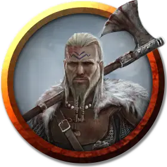

Грегир Фендельсон (1-4 уровня)
Gregir Fendelsohn (Levels 1-4)
Средний Гуманоид (Человек), законно-нейтральный, именной НИП

Класс Доспеха 12 (кожаный доспех)
Хиты 11 (2к8 + 2)
Скорость 30 футов
| мод | спас | ||
|---|---|---|---|
| СИЛ | 11 | +0 | +0 |
| ЛОВ | 12 | +1 | +1 |
| ТЕЛ | 12 | +1 | +1 |
| мод | спас | ||
|---|---|---|---|
| ИНТ | 10 | +0 | +0 |
| МДР | 10 | +0 | +0 |
| ХАР | 10 | +0 | +0 |
Чувства пассивное Восприятие 10
Языки один любой язык (обычно Общий)
Опасность 1/8 (25 опыта)
Бонус мастерства +2
Действия
Скимитар. . Рукопашная атака оружием: +3 к попаданию, досягаемость 5 футов, одна цель. Попадание: 4 (1к6 + 1) рубящего урона.
Лёгкий арбалет. . Дальнобойная атака оружием: +3 к попаданию, дистанция 80 футов/320 футов, одна цель. Попадание: 5 (1к8 + 1) колющего урона.
Описание
Грегир Фендельсон предан и страстен. Он настаивает на том, чтобы команде платили, несмотря ни на что.